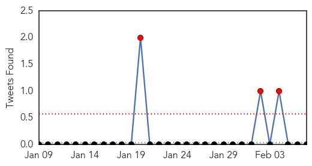
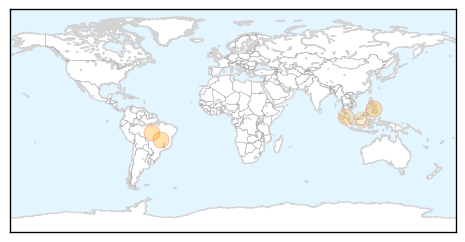
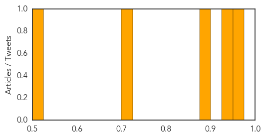
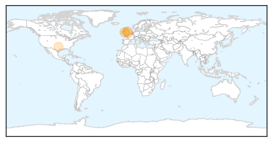
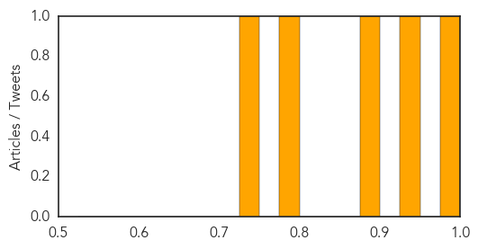

Dengue Fever
30-Day Web Trend
2 alerts, 0 warnings

30-Day Twitter Trend
5 alerts, 0 warnings

Article Locations
Article Confidences
Top Articles:
- 0.956
- Cases of dengue in Brazil up 57 pct in January due to water crisis
- 0.943
- Cases of dengue in Brazil up 57 pct in January due to water crisis
- 0.880
- Cebu News, The Freeman Sections, The Freeman
- 0.708
- Selangor collaborates with Health Ministry to curb dengue – Bernama
- 0.514
- Dr Jerip warns against complacency in fight against dengue – BorneoPost Online
Top Tweets:
-
No tweets found for Feb 07, 2015
Influenza
30-Day Web Trend
0 alerts, 0 warnings

30-Day Twitter Trend
2 alerts, 0 warnings

Article Locations
Article Confidences
Top Articles:
Top Tweets:
-
No tweets found for Feb 07, 2015